Proposito del sitio
El proposito de este sitio tiene como fin explicar los conceptos basicos de flexbox, listas y enlaces y asi comptender y posteriormente usarlos en HTML.
Flex Box

Es un modulo de caja flexible, el cual fue diseñado como uun modelo unidimensional y que tiene un metodo que puede ayudar
a distribuir el espacio entre los items de una interfaz y mejorar las capacidades de alineacion. Cuando se trabaja con flexbox
necesitamos pensar en dos ejes - el eje principal y el eje cruzado. El eje princiapl esta defimido
por la propiedad flex-direction y el eje cruzado es perpendicular a este.
Eje principal
El eje principal esta definido por flex-direction, el cual posee cuatro variables.
- row
- row-reverse
- column
- column-reverse
Si se elige row o row-reverse el eje principal se correra a lo largo de la fila segun la direccion de la fila.

Cuando elige column o column-reverse el eje principal se correra desde el borde superior de la pagina hasta el final.

Eje cruzado
Este va perpendicular al eje principal, por lo tanto flex-direction
es row o row-reverse donde el eje cruzado ira por las columnas.

Si el eje es un column o column-reverse entonces el eje cruzado correra hacia lo largo de las filas.

Tomado de.Mdn Web docs.https://developer.mozilla.org/es/docs/Web/CSS/CSS_Flexible_Box_Layout/Basic_Concepts_of_Flexbox
Listas y enlaces HTML
Listas
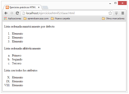
Las listas nos permite crear un conjunto de elementos de forma de lista en una pagina, el cual tiene como un orden un guion o numero.
Las listas tiene diferentes tipo en HTML entre los cuales tenemos los siguientes.
- Listas ordenadas
- Listas desordenadas
- Listas de definiciones
Listas ordenadas
Son aquellas que muestran los elementos de la lista en orden. Se representan en forma de elementos enumerados, cuando los elemetos de cada uno ira por medio de un numero o letra el cual se establecera un orden.
Las listas ordenas se representan por medio de la etiqueta ol.
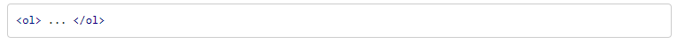
cada uno de los elementos de la lista se representara por medio de li.
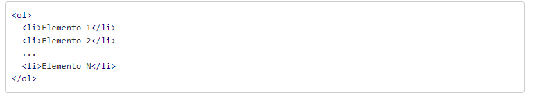
Inicio de lista start
Este atributo permite en dodne se quiere emepezar la lista, ya que en HTML por defecto inicia con el numero 1.
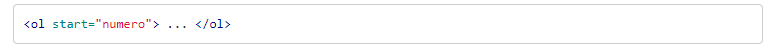
De tal forma, que si quiere que la lista se empieze con el numero 5, se hara de la suguinte forma:
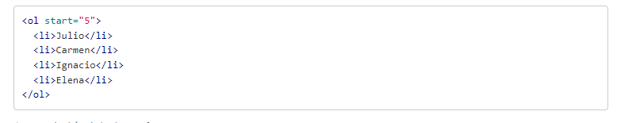
Listas desordenadas
Sirven para mostrar las listas sin ningun tipo de orden, se hace por medio de una viñeta que puede ser punto o un cuadarado.
Para definir se utiliza el elemento ul.
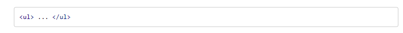
Para representar la lista desordenada se utiliza el mismo elemento li

Listas de definiciones
Nos sirven para montar listas en la que tenemos la estructura con un valor y una definicion. Suelen ser listas para defirnir terminos, como si fuese un diccionario, si bien pueden ser cualaquier valor o definicion.
Esta lista se construye mediante elemnto dl
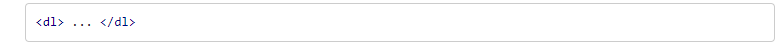
En las listas de difiniciones si tienen dos elementos anidados, que se representa al valor dt y el que representa la definicion dd.
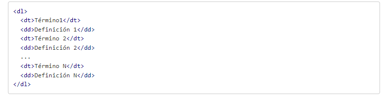
Tomado de. Manual web.https://www.manualweb.net/html/listas-html/
Enlaces HTML
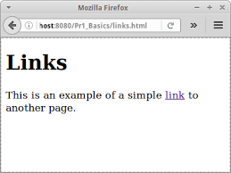
Los enlaces en HTML son muy impportantes ya que por medio de estos podemos comunicar una pagina a otra, ya que esta forma enlazando los documentos HTML podemos acajar tejiendo lo que es internet.
Para crear un enlace en HTML se utiliza el elemento A con la sintaxis:
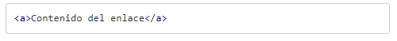
El objetivo principal de este sera enlazar un destino. Para poder enlazarlo se utilizara el atributo href. El valor del atributo href puede ser cualquier URI que represente un recurso. De manera que el enlace en HTML se creara con la sintaxis:
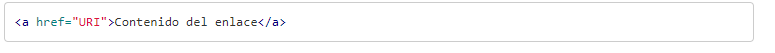
Destino enlace
Si no se configura el navegador web que se este utilizando el enlace se abrira en la misma ventana en la que se tiene el enlace.
Para hacer esto lo podemos hacer mediante el atributo target, estos son algunos valores que se admite en target.
- _blank, intentara abrir el enlace en una nueva ventana. La ventana no tendra nombre
- _self, el usuario intentara abrir en enlace en el mismo marco donde esta el codigo actual.
- _parent, el usario intentara abrir el enlace en frasemet inmediatamente superior al que se encuentra la pagina.
- _top, se abrira el enlace en la ventana padre. En el caso de que exista un frasemet lo eliminara y se hara con toda la ventana.
- nombre_marco, interntara abrir en el enlace frame que coincida con el nombre. En caso de no existir un frame con ese nombre lo abrira en una nueva ventana, asignandole dicho nombre.
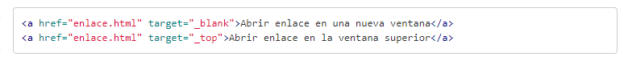
Titulos de enlaces
Sirve oara enlazar contra un recurso de la web, servidor, directorio, dominio. Se describe lo que enlaza es el contenido que se encuentra entre las etiquetas A.
El elemnto A ofrece un atributo llamado title, donde se puede describir de una forma textual el destino enlace.

Tomado de.Manual web.https://www.manualweb.net/html/enlaces-html/